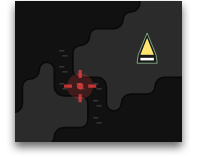

向其他房间发射一枚核弹，对着落区域造成大量伤害。 发射后需要时间冷却且需重新装填能量和 ghodium 资源。 发射后将会在目标房间位置创建一个对任何玩家可见的 Nuke 对象，直至其着陆。 已发射的核弹无法移动或者取消。核弹不能从新手房间发射或者发射向新手房间。放置到 StructureNuker 中的资源无法被取出 (withdraw)。
| 控制器等级 | |
| 1-7 | — |
| 8 | 1 nuke |
| 建造花费 | 100,000 |
| 生命值 | 1,000 |
| 攻击范围 | 10 rooms |
| 发射花费 | 300,000 energy 5,000 ghodium |
| 发射冷却 | 100,000 ticks |
| 着陆时间 | 50,000 ticks |
| 效果 | 立刻清除所有的 creep，建筑工地(construction site)和掉落的资源，即使它位于 rampart 之下。并对建筑造成如下伤害：
注意，您可以将来自多个不同房间的核弹叠加到同一位置来增强伤害。 Nuke 着落不会产生墓碑（tombstone）和遗迹（ruin），并且会销毁房间中所有存在的墓碑和遗迹。 如果核弹着落时房间正处于安全模式，则会立刻取消安全模式，并将安全模式的冷却时间重置为 0。 房间控制器将会触发 |
附加的效果，一个包含如下属性的对象数组：
| parameter | type | description |
|---|---|---|
effect | number | 该附加效果的 ID。可以是自然效果 ID 或者 Power ID。 |
level (可选) | number | 该附加效果的 Power 等级。如果效果不是 Power 效果则不存在该属性。 |
ticksRemaining | number | 多长时间之后会失去这个效果。 |
表示该对象在房间中的坐标的对象。
Room对象的链接。如果对象是标志或工地并且放置在你不可见的房间中，则可能为undefined。
当前这个建筑的当前生命值。
这个建筑的最大生命值。
一个唯一的对象标识。你可以使用Game.getObjectById方法获取对象实例。
STRUCTURE_*常量之一。
立即摧毁这个建筑。
如下错误码之一：
| constant | value | description |
|---|---|---|
OK | 0 | 这个操作已经成功纳入计划。 |
ERR_NOT_OWNER | -1 | 你不是这个建筑的拥有者。 |
ERR_BUSY | -4 | 敌对creep在这个房间中。 |
检查这个建筑是否可用。如果房间控制等级不足，这个方法会返回false，并且这个建筑会在游戏中红色高亮。
布尔值。
切换这个建筑受到攻击时的自动通知。通知会发送到你的账户邮箱。默认开启。
| parameter | type | description |
|---|---|---|
enabled | boolean | 是否启用通知。 |
如下错误码之一：
| constant | value | description |
|---|---|---|
OK | 0 | 这个操作已经成功纳入计划。 |
ERR_NOT_OWNER | -1 | 你不是这个建筑的拥有者。 |
ERR_INVALID_ARGS | -10 |
|
是否是你拥有的建筑。
建筑拥有者信息，一个包含如下属性的对象：
| parameter | type | description |
|---|---|---|
username | string | 拥有者姓名。 |
此属性已被弃用，将很快删除。
此属性已被弃用，将很快删除。
.store.getCapacity(RESOURCE_ENERGY) 的别名。
此属性已被弃用，将很快删除。
此属性已被弃用，将很快删除。
.store.getCapacity(RESOURCE_GHODIUM) 的别名。
下次发射前还需多少 tick 的冷却时间。
if(structure.store.getFreeCapacity(RESOURCE_ENERGY) > 0) {
creep.transfer(structure, RESOURCE_ENERGY);
}一个包含了该建筑中所存储资源的 Store 对象。
nuker.launchNuke(new RoomPosition(20,30, 'W1N1'));向指定位置发射核弹。
| parameter | type | description |
|---|---|---|
pos | RoomPosition | 目标房间位置 |
如下错误码之一：
| constant | value | description |
|---|---|---|
OK | 0 | 这个操作已经成功纳入计划。 |
ERR_NOT_OWNER | -1 | 你不是这个建筑的拥有者。 |
ERR_NOT_ENOUGH_RESOURCES | -6 | 该建筑没有足够的能量和/或 ghodium。 |
ERR_INVALID_TARGET | -7 | nuke 无法发射至指定的 RoomPosition（见 起始区域） |
ERR_NOT_IN_RANGE | -9 | 目标房间超出打击范围。 |
ERR_INVALID_ARGS | -10 | 目标不是有效的 RoomPosition。 |
ERR_TIRED | -11 | 该建筑仍在冷却。 |
ERR_RCL_NOT_ENOUGH | -14 | 房间控制中心等级不足。 |